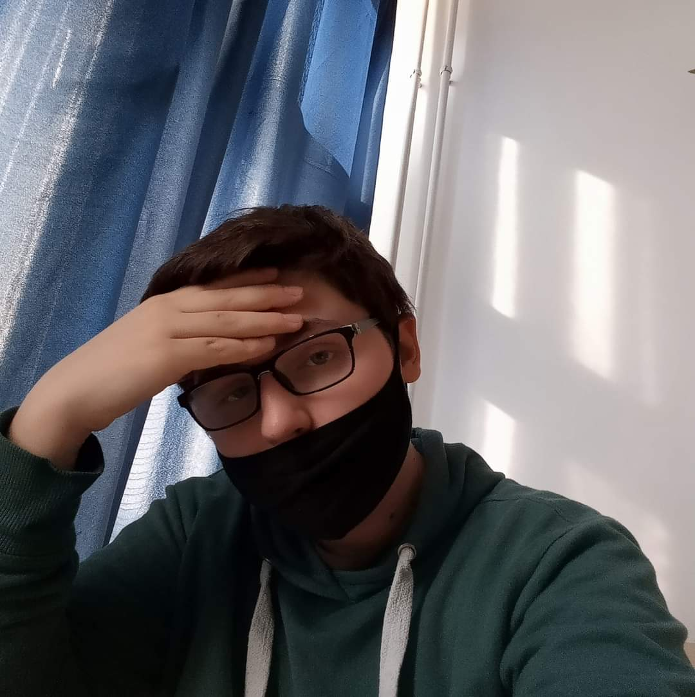
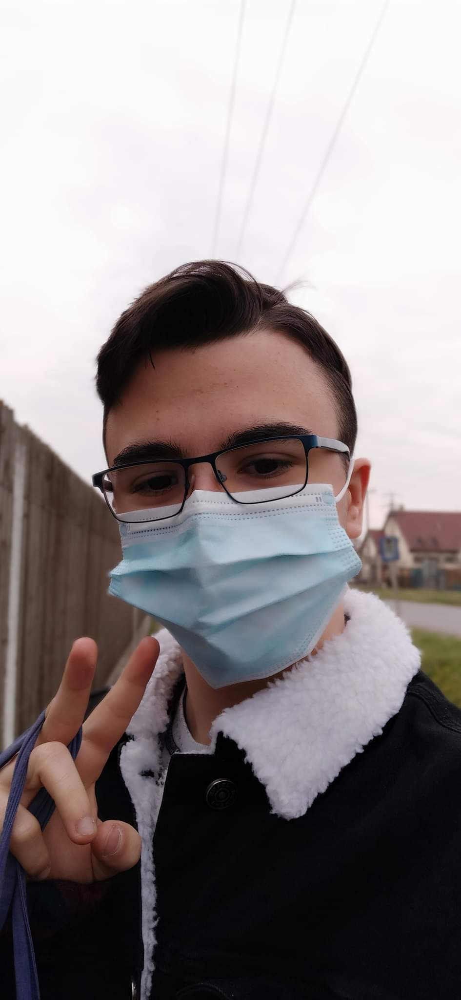
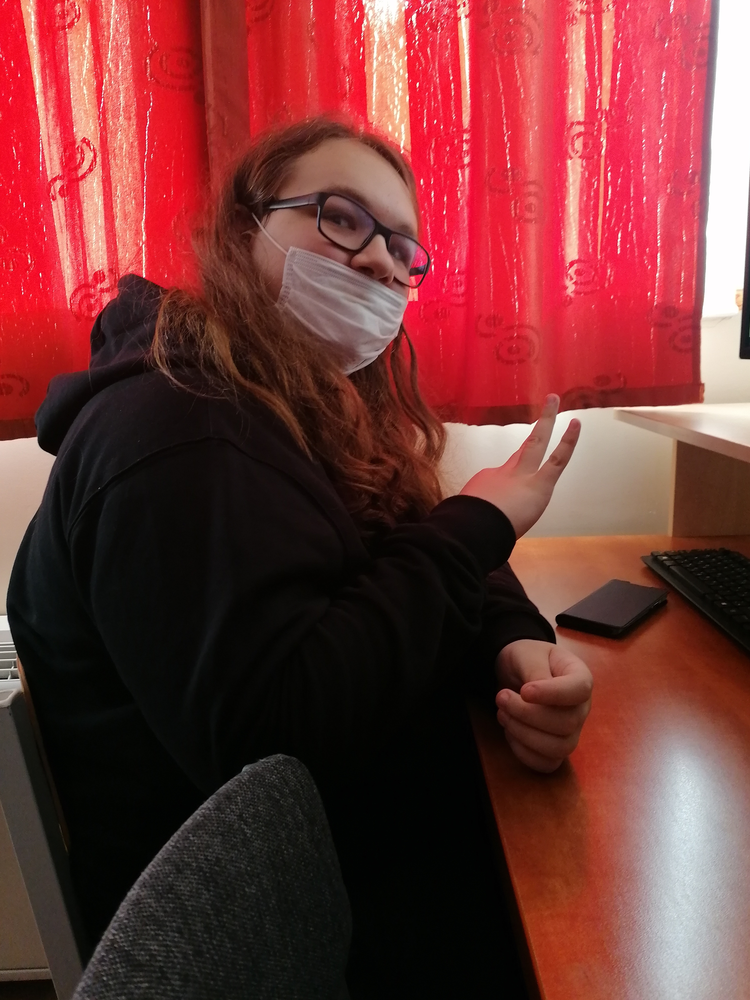

Riazáncev Csanád
HTML szakos, nehezen indult de hamar belejőtt. Otthoni gépén valamit annyira elrontott, hogy nem tudta otthon csinálni az oldalt. Emellett körülbelül háromszor ütött az asztalra egy híba miatt, amit nem tudott megjavítani egy jó ideig.
Oroszlán Mihály
CSS szakos,
Molnár Bence Csaba
Grafikai szakos,
